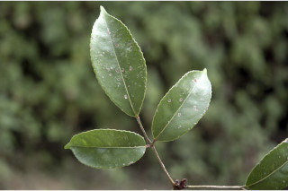
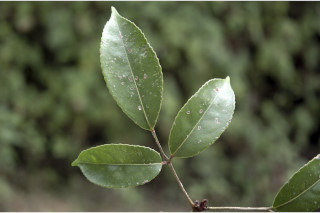
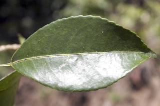
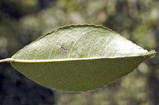
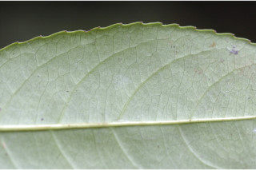
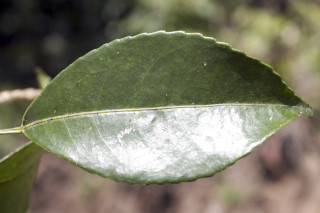
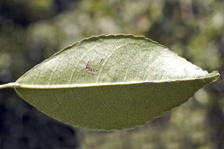
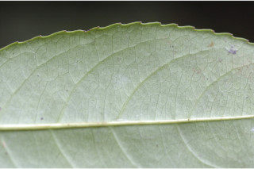

Trees up to 12 m tall.
12 ಮೀ ಎತ್ತರದವರೆಗಿನ ಮರಗಳು.
Trees up to 12 m tall.
மரங்கள் 12 மீ. உயரம் வரை வளரக்கூடியது.
Bark brownish, smooth, shallowly fissured when mature; blaze cream.
ತೊಗಟೆ ಕಂದು ಬಣ್ಣದ ಛಾಯೆಯಲ್ಲಿದ್ದು ಬಲಿತಾಗ ಆಳವಿಲ್ಲದ ಸೀಳಿಕಾ ಮಾದರಿಯಲ್ಲಿರುತ್ತದೆ;ಕಚ್ಚು ಮಾಡಿದ ಜಾಗ ಕೆನೆ ಬಣ್ಣದಲ್ಲಿರುತ್ತದೆ.
Bark brownish, smooth, shallowly fissured when mature; blaze cream.
மரத்தின் பட்டை ப்ரவுன் நிறமானது, வழுவழுப்பானது, முதிரும் போது வலைப்பின்னல் பிளவுகளுடையது; உள்பட்டை கீரிம் நிறமானது.
Young branchlets angular to subterete, glabrous.
ಎಳೆಯ ಕಿರುಕೊಂಬೆಗಳು ಕೋನಯುಕ್ತವಾಗಿರುವುದರಿಂದ ಉಪದುಂಡಾಗಿದ್ದು, ರೋಮರಹಿತವಾಗಿರುತ್ತವೆ.
Young branchlets angular to subterete, glabrous.
சிறிய நுனிக்கிளைகள் குறுக்குவெட்டுத் தோற்றத்தில் கோணங்களுடையது முதல் கிட்டதட்ட வளையமானது, உரோமங்களற்றது.
Leaves compound, imparipinnate, opposite, decussate; stipule interpetiolar, caducous and leaving scar; rachis pulvinate, terete, glabrous; petiolule 0.5 long for lateral leaflets and 2 cm long with swollen apex in terminal one, canaliculate, glabrous; leaflets opposite, usually 3 or rarely 5, 7-13 x 3-5 cm, elliptic to elliptic-oblong to ovate, apex acuminate, base acute, margin serrate, coriaceous, glabrous; midrib thinly raised above; secondary_nerves 4-8 pairs, gradually curved and ascending towards apex; tertiary_nerves reticulo-percurrent.
ಎಲೆಗಳು ಸಂಯುಕ್ತವಾಗಿದ್ದು ಅಸಮಗರಿ ರೂಪಿಗಳಾಗಿದ್ದು ಅಭಿಮುಖ,ಕತ್ತರಿಯಾಕಾರದ ಜೋಡನಾ ವ್ಯವಸ್ಥೆಯಲ್ಲಿರುತ್ತವೆ; ಕಾವಿನೆಲೆಗಳು, ತೊಟ್ಟುಗಳ ನಡುವೆ ಇದ್ದು, ಉದುರುವ ಹೋಗುವ ಮಾದರಿಯವುಗಳಾಗಿದ್ದು ಉದುರಿದ ನಂತರ ಗುರುತುಗಳನ್ನು ಉಳಿಸುತ್ತವೆ;ಅಕ್ಷದಿಂಡು ಉಬ್ಬಿದ ಬುಡದ ಸಮೇತವಿದ್ದು,ದುಂಡಾಗಿರುತ್ತವೆ, ರೋಮರಹಿತವಾಗಿರುತ್ತದೆ; ಪಾರ್ಶ್ವದಲ್ಲಿನ ಉಪಪತ್ರಗಳ ತೊಟ್ಟು 0.5 ಸೆಂ.ಮೀ. ಉದ್ದವಿದ್ದು ಮತ್ತು ,ತುದಿಯಲ್ಲಿನ ಉಪತ್ರಗಳ ತೊಟ್ಟು,ಉಬ್ಬಿದ ಅಗ್ರವನ್ನು ಹೊಂದಿದ್ದು 2 ಸೆಂ.ಮೀ. ಉದ್ದವಿರುತ್ತವೆ,ಕಾಲುವೆರೆ ಸಮೇತವಿರುತ್ತವೆ, ರೋಮರಹಿತವಾಗಿರುತ್ತದೆ; ಉಪಪತ್ರಗಳು ಅಭಿಮುಖಿಗಳಾಗಿದ್ದು, 3 ಇದ್ದು, 7-13 X 3– 5 ಸೆಂ.ಮೀ. ಗಾತ್ರ ಹೊಂದಿದ್ದು,ಅಂಡವೃತ್ತದಿಂದ ಅಂಡವೃತ್ತ- ಚತುರಸ್ರದಿಂದ ಅಂಡದ ರೀತಿಯವರೆಗಿನ ಆಕಾರ, ಕ್ರಮೇಣ ಚೂಪಾಗುವ ತುದಿ,ಚೂಪಾದ ಬುಡ,ಗರಗಸ ದಂತಿತ ಅಂಚು,ತೊಗಲನ್ನು ಹೋಲುವ ಮೇಲ್ಮೈ ಹೊಂದಿದ್ದು ರೋಮರಹಿತವಾಗಿರುತ್ತವೆ; ಮಧ್ಯನಾಳ ಮೇಲ್ಭಾಗದಲ್ಲಿ ತೆಳುವಾಗಿ ಮೇಲೆದ್ದಿರುತ್ತದೆ; ಎರಡನೇ ದರ್ಜೆಯ ನಾಳಗಳು 4 - 8 ಜೋಡಿಗಳಿದ್ದು, ಕ್ರಮೇಣವಾಗಿ ಬಾಗಿರುತ್ತವೆ ಮತ್ತು ತುದಿಯ ಕಡೆಗೆ ಆರೋಹಣವಾಗುತ್ತಾ ಹೋಗುತ್ತವೆ;ಮೂರನೇ ದರ್ಜೆಯ ನಾಳಗಳು ಜಾಲಬಂಧ ನಾಳ ವಿನ್ಯಾಸದಲ್ಲಿದ್ದು ಎಲೆ ದಿಂಡಿಗೆ ಅಡ್ಡವಾಗಿ ಕೂಡುತ್ತವೆ.
Leaves compound, imparipinnate, opposite, decussate; stipule interpetiolar, caducous and leaving scar; rachis pulvinate, terete, glabrous; petiolule 0.5 long for lateral leaflets and 2 cm long with swollen apex in terminal one, canaliculate, glabrous; leaflets opposite, usually 3 or rarely 5, 7-13 x 3-5 cm, elliptic to elliptic-oblong to ovate, apex acuminate, base acute, margin serrate, coriaceous, glabrous; midrib thinly raised above; secondary_nerves 4-8 pairs, gradually curved and ascending towards apex; tertiary_nerves reticulo-percurrent.
இலைகள் கூட்டிலை, ஒற்றைபடை சிறகு வடிவக்கூட்டிலைகள், எதிரடுக்கமானவை, குறுக்குமறுக்கமானவை; இலையடிச்செதில் இருஇலைக்காம்பிற்கு நடுவே (இண்டர்பீட்டியோலார்) உடையது, எளிதில் உதிரக்கூடியது மற்றும் தழும்புகளை ஏற்படுத்துகின்றன; மத்தியகாம்பு (ராக்கிஸ்) பல்வினேட், குறுக்குவெட்டுத் தோற்றத்தில் வளையமானது, உரோமங்களற்றது; பக்கவாட்டில் அமைந்த சிற்றிலையின் காம்பு 0.5 செ.மீ. நீளமானது, நுனியிலுள்ள சிற்றிலையின் காம்பு 2 செ.மீ. நீளமானது மற்றும் அதன் முனை உப்பியது, குறுக்குவெட்டுத் தோற்றத்தில் கேனாலிகுலேட், உரோமங்களற்றது; சிற்றிலைகள் எதிரடுக்கமானவை, பொதுவாக 3 அல்லது அரிதாக 5, 7-13 X 3-5 செ.மீ., நீள்வட்ட வடிவானது முதல் நீள்வட்டம்-நீள்சதுர வடிவானது முதல் முட்டை வடிவானது, அலகின் நுனி அதிக்கூரியது, அலகின் தளம் கூரியது, அலகின் விளிம்பு ரம்ப பற்களுடையது, கோரியேசியஸ், உரோமங்களற்றது; மையநரம்பு மேற்புறத்தில் அலகின் பரப்பைவிட சிறிது உயர்ந்து இருக்கும்; இரண்டாம் நிலை நரம்புகள் 4-8 ஜோடிகள், சீராக வளைந்தவை மற்றும் நுனி நோக்கி வளைந்தவை; மூன்றாம் நிலை நரம்புகள் வலைப்பின்னல்-பெர்க்கரண்ட் போன்றவை.
Inflorescence terminal or axillary panicle; flowers cream; pedicel ca. 0.1 cm long.
ಪುಷ್ಪಮಂಜರಿಗಳು ತುದಿಯಲ್ಲಿನ ಅಥವಾ ಅಕ್ಷಾಕಂಕುಳಿನಲ್ಲಿನ ಪುನಾರಾವೃತ್ತಿಯಾಗಿ ಕವಲೊಡೆಯುವ ಮಾದರಿಯವು ;ಹೂಗಳು ಕೆನೆ ಬಣ್ಣ ಹೊಂದಿರುತ್ತವೆ; ತೊಟ್ಟುಗಳು ಅಂದಾಜು 0.1 ಸೆಂ.ಮೀ. ಉದ್ದವಿರುತ್ತವೆ.
Inflorescence terminal or axillary panicle; flowers cream; pedicel ca. 0.1 cm long.
மஞ்சரி தண்டின் நுனியில் அல்லது இலைக்கோணங்களில் காணப்படுபவை பேனிக்கிள் வகை மஞ்சரி; மலர்கள் கீரிம் நிறமானது; மலர்காம்பு 0.1 செ.மீ. நீளமானது.
Berry, globose, 3-celled; seeds 3.
ಬೆರ್ರಿಗಳು,ಗೋಳಾಕಾರ ಹೊಂದಿದ್ದು,3 ಕೋಶಗಳ ಸಮೇತವಿರುತ್ತವೆ;ಬೀಜಗಳ ಸಂಖ್ಯೆ 3.
Berry, globose, 3-celled; seeds 3.
முழுச்சதைகனி (பெர்ரி), கோள வடிவமானது, 3-அறைகளுடையது; விதைகள் 3.

 

 




